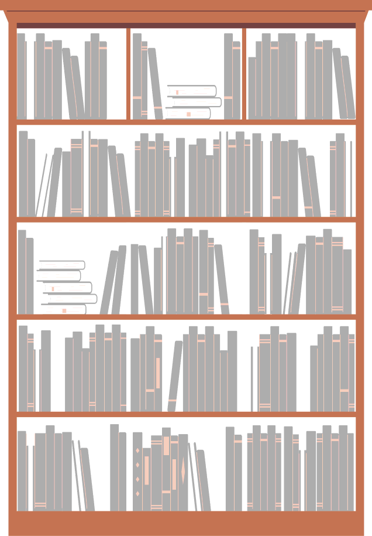
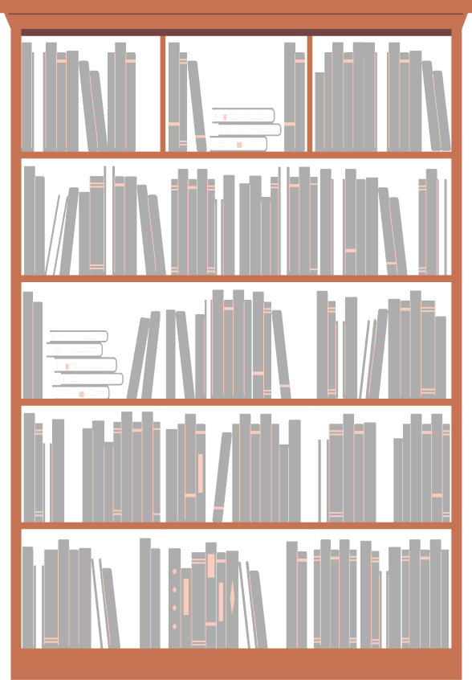
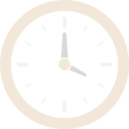
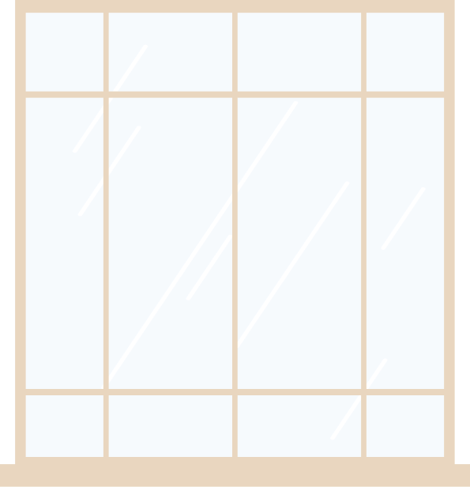
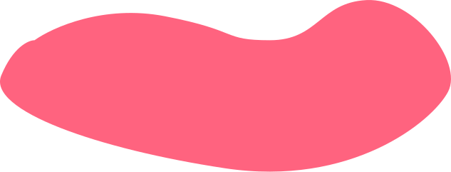
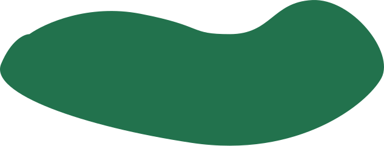
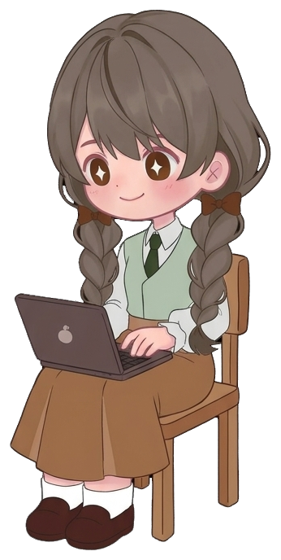
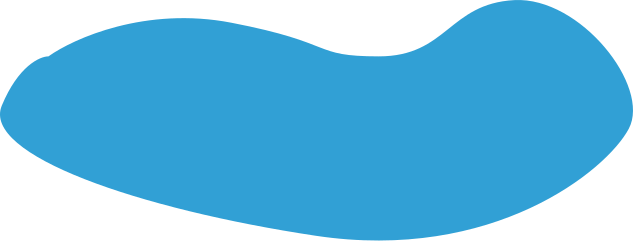
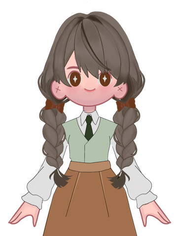

Latihan bahasa Inggris
kapan saja.
Milo adalah teman latihan virtual 2D yang siap mendengarkan, merespons dengan suara alami, dan membantumu mengenal kemampuan berbicara berdasarkan standar CEFR. Salah tidak apa-apa, yang penting terus mencoba.
Mulai PercakapanTeman latihan yang
membuatmu berani bicara
Tak perlu menunggu kalimat sempurna. Coba dulu, dengarkan respons Milo, lalu pelan-pelan jadi lebih lancar.
Evaluasi Langsung
Kenali struktur kalimat, tenses, grammar, dan pilihan kosakata lewat saran sederhana saat kamu berlatih. Bukan nilai resmi CEFR.

Milo, Teman Virtualmu
Milo menanggapi suara atau pesanmu dengan ramah. Di sini, salah ucap bukan masalah setiap percobaan tetap berarti.


Evaluasi Bantuan Dwibahasa
Putar ulang pelafalan lewat TTS, yaitu suara dari teks, dan lihat terjemahan Bahasa Indonesia saat butuh sedikit bantuan.

Latihan sesuai
situasi nyata
Pilih yang paling dekat dengan kebutuhanmu. Milo akan menyiapkan pembuka percakapan, lalu kamu bisa mulai dengan caramu sendiri.
Pilih situasi di atas, lalu mulai ngobrol dengan Milo di ruang latihan.

Temukan level yang tepat untukmu
Tak perlu menebak level yang “sempurna”. Pilih fokus yang terasa pas sekarang; kamu selalu bisa berganti nanti.
Setiap percakapan adalah
langkah maju
Latihanmu saat ini berlangsung di halaman ini. Riwayat latihan dan rekomendasi topik akan tersimpan rapi untuk akunmu.
Mulai Percakapan Pertama